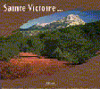
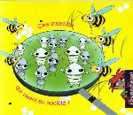
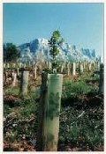
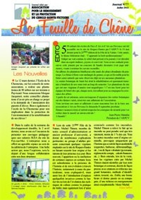

Au coeur du Pays de Cézanne
Au coeur du Pays de Cézanne
Dans le cadre de la valorisation de la montagne Sainte-Victoire, l'ARPCV a élaboré plusieurs documents pédagogiques (deux livres, un CDRom interactif, des livrets pédagogiques pour enfants, des cartes postales, et de nombreux articles) exposant les richesses présentes sur ce site.
Il sont disponibles au secrétariat de l'association.
Ouvrages sur Sainte Victoire :

Le livre sur Sainte-Victoire
Ouvrages pédagogiques pour enfants :
 Ces insectes qui vivent en société
 Le
conte-livret
sur les animaux mal-aimés
Le
conte-livret
sur les animaux mal-aimés
 Le livret pédagogique sur les
plantes aromatiques
Le livret pédagogique sur les
plantes aromatiques
 Le livret pédagogiques sur " La vie de la forêt
Méditerranéenne"
Le livret pédagogiques sur " La vie de la forêt
Méditerranéenne"
 Le
livret pédagogiques sur " L'Eau
douce en Provence"
Le
livret pédagogiques sur " L'Eau
douce en Provence"
Ouvrage pour scolaires :

Pour tous :


Articles issus du journal de l'ARPCV